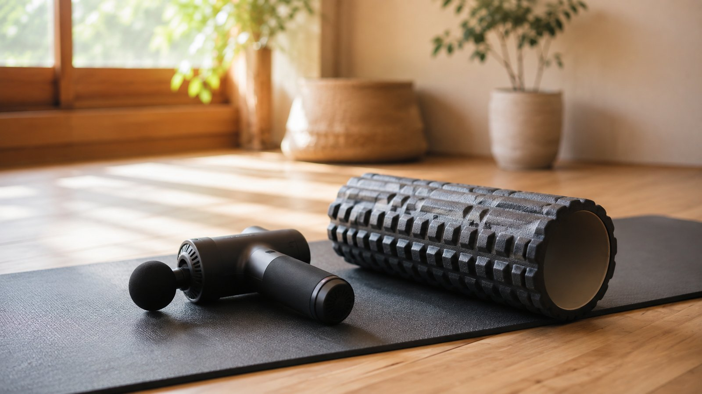
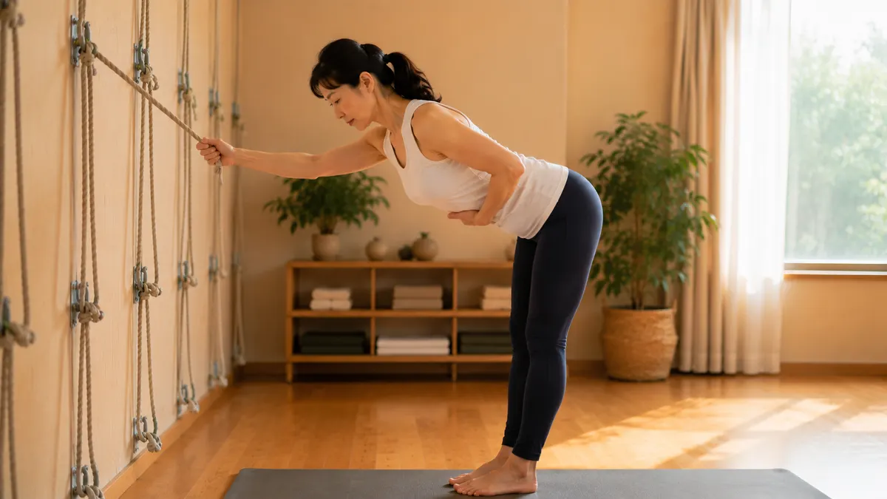

按摩槍、筋膜刀和壁繩瑜伽差在哪？三種方式怎麼選？

下班到家，你拿起按摩槍，肩膀當下放鬆了一點。隔天開完會又想拿出來，你開始想：我需要的是再放鬆一下，還是換一種動作練習？
按摩槍以震動接觸局部，筋膜刀以工具施加局部壓力，壁繩瑜伽則在外部支點下由練習者主動移重與控制動作。想比較當下的舒適感，可先區分工具的用途；想了解日常動作怎麼用力，可向老師詢問支撐練習。工具或課程的感受都不能用來診斷緊繃的原因。
按摩槍、筋膜刀與壁繩，分別在做什麼？
按摩槍與筋膜刀都由工具接觸局部，方式分別是震動和壓力。壁繩課有牆面支點，人仍要自己控制怎麼站、怎麼移動、怎麼回來。想先理解繩帶在練習中怎麼提供支點，可以從基本原理看起。對工具不熟，先遵循製造商說明，避免在不明疼痛或新傷處反覆操作。

👆 手機版可左右滑動
| 方式 | 主要接觸或支撐 | 適合先問什麼 |
|---|---|---|
| 按摩槍 | 工具以震動接觸指定部位。 | 我想比較的是單次使用的感受嗎？是否了解使用限制？ |
| 筋膜刀 | 工具在局部施加壓力，感受受人員和手法影響。 | 是否有人能先說明方式與限制？ |
| 壁繩瑜伽 | 牆面繩帶提供支點，練習者自行移動與控制幅度。 | 我想觀察的是哪個日常動作？ |
當下想放鬆，還是想練習日常用力？
如果你最困擾的是明明按摩完舒服一些，隔天又緊，這個問題交給按摩完隔天又緊的日常觀察。若想找老師一起看抬手、轉頭或久坐時的用力方式，可先看一對一肩頸課怎麼安排；也可先讀壁繩體驗前值得說清楚的期待，再決定是否先上課。

本文是一般動作與課程資訊。若練習引發明顯不適，先停止並依情況尋求醫療專業評估。
常見問題
按摩槍和筋膜刀做的是同一件事嗎？
兩者都是工具接觸局部，震動和施壓方式有所不同。選擇前可先弄清工具用途與使用限制。
壁繩可以替代按摩槍嗎？
壁繩課用來練習帶支點的主動動作。想選哪個方式，可以先確認此刻是想休息放鬆，還是想了解怎麼動。
用工具後隔天又緊，要加重力道嗎？
可以先記錄在哪種日常情境又緊，避免把反覆緊繃直接當作需要加大力道的訊號。
可以同一天先用工具再上課嗎？
是否適合要看當天感受及工具使用方式。若有不適，先停止並把狀況告訴老師或醫療專業人員。
新出現的疼痛可以自己用工具反覆試嗎？
先停止反覆操作。若持續疼痛、麻木或無力，請先尋求醫療評估。
把「哪個時刻又開始緊」記下來，下次比較工具或課程會更有方向。開始免費體態訊號掃描。